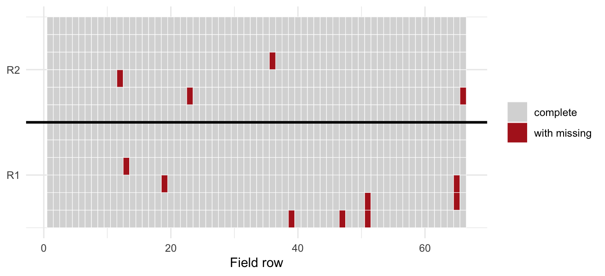
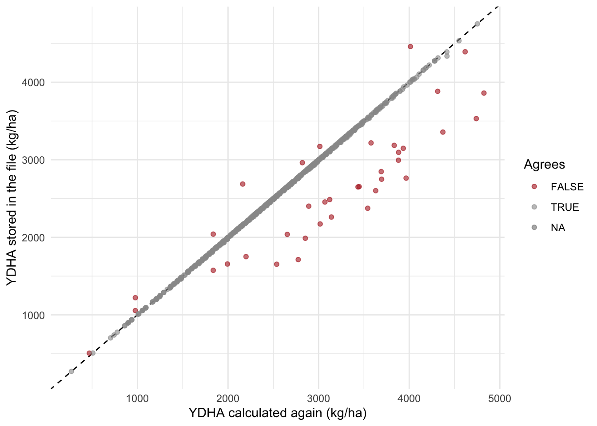
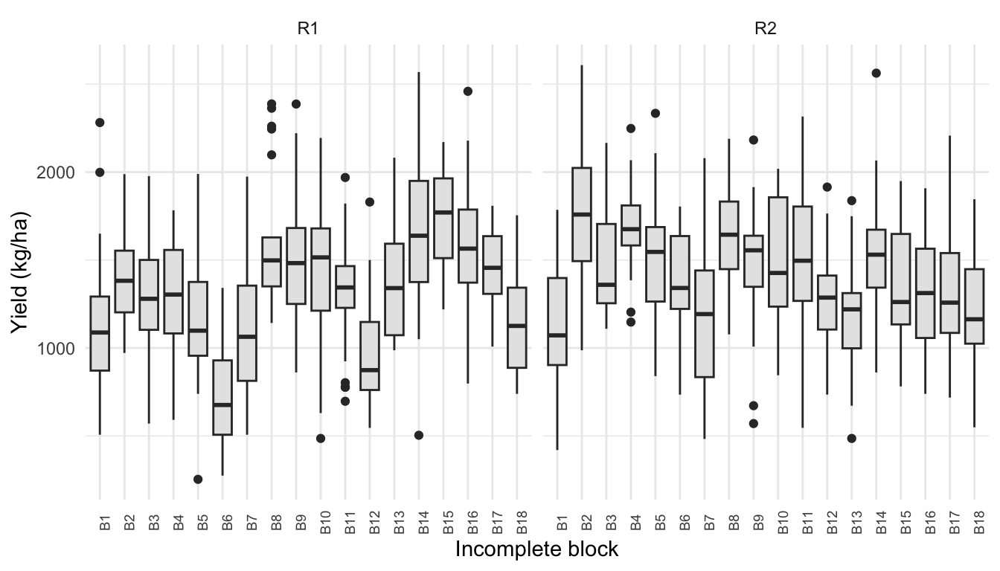
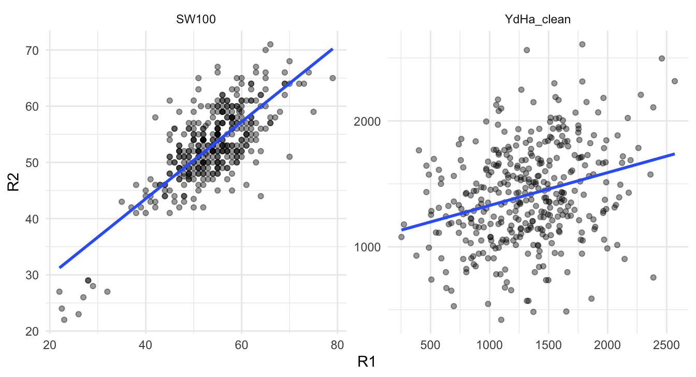
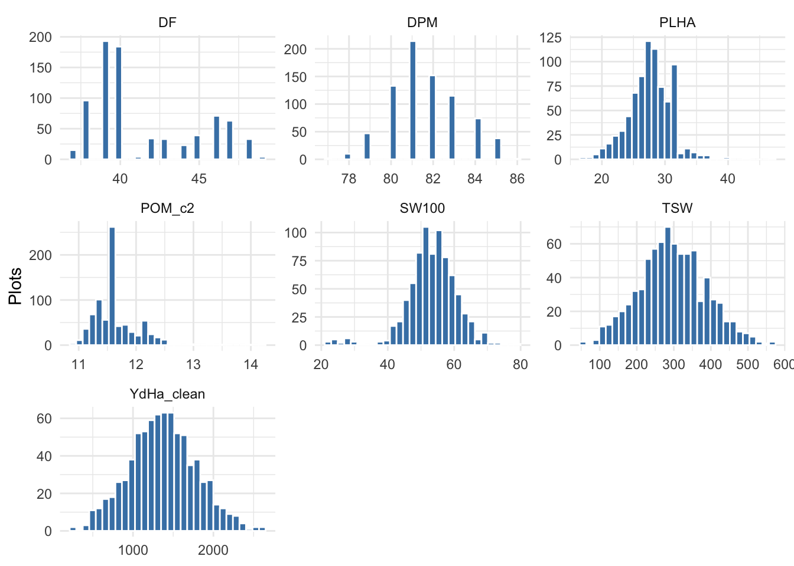
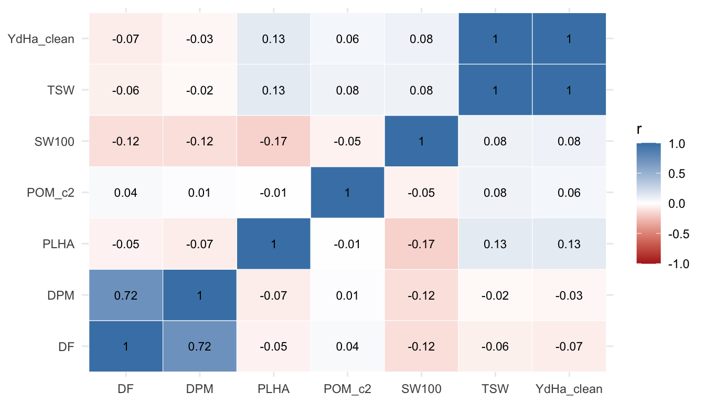
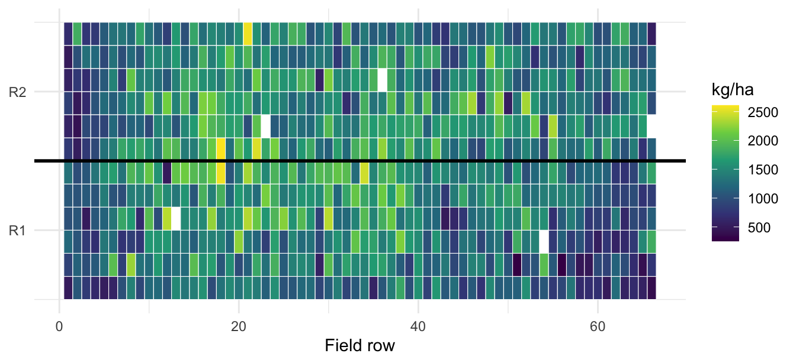
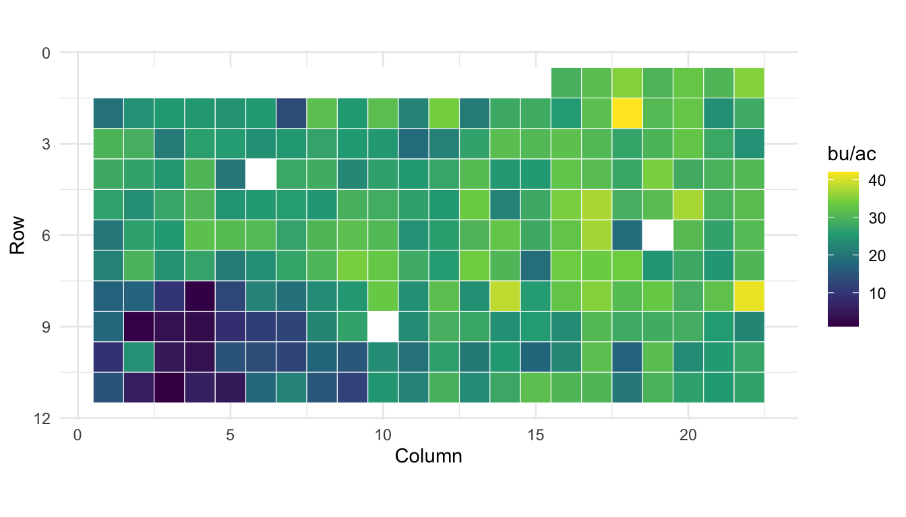

library(readr)
library(dplyr)
library(tidyr)
library(ggplot2)
library(agridat) # install.packages("agridat") if needed, see @sec-field-data4 Data Quality Control and Exploratory Analysis
Author: Luis Fernando Delgado Muñoz
Session: Day 1, Monday 9 November
4.1 Learning objectives
- Detect missing values and decide what they mean
- Check that values are possible and consistent between traits
- Find outliers and decide whether they are errors or biology
- Summarize traits by genotype and replicate, and use the CV as a quality indicator
- Use plots and field maps to separate biological from technical variation
In Chapter 3 we checked that the field book matches the field plan. Now we check the values. Quality control (QC) and exploratory data analysis (EDA) are the last steps before the statistical analysis of the next days: they do not produce results for a report, but they decide whether the results of the analysis can be trusted.
4.2 The QC workflow
The same questions are asked, in this order, for every trial:
- Missing values. How many, in which traits, in which plots? Is there a pattern?
- Possible values. Is every value inside the biological limits of the trait?
- Consistency between traits. Do traits that depend on each other agree?
- Outliers. Which values are unusual, and are they errors or real?
- Summaries and plots. Means and CV by replicate and genotype, distributions, correlations and field maps.
Every decision is written in the R script, never made by hand in Excel. The raw file is not changed: corrections are made in code, so that anyone can see and repeat them.
4.3 The data
We use the common bean trial Dar16C_hiP introduced in Chapter 1: 380 lines in an alpha-lattice with 2 replicates, 792 plots in a field of 66 rows and 12 columns. Replicate R1 occupies columns 1 to 6 and R2 columns 7 to 12.
beans <- read_csv("data/Example_Beans.csv", show_col_types = FALSE)
traits <- c("DF", "DPM", "PLHA", "POM_c2", "SW100", "TSW",
"YDHA", "YDHPL", "YdHa_clean")
# one row per plot and trait: convenient for checks on all traits at once
beans_long <- beans |>
pivot_longer(all_of(traits), names_to = "trait", values_to = "value") |>
mutate(trait = factor(trait, levels = traits))A first overview of all traits in one table:
overview <- beans_long |>
group_by(trait) |>
summarise(
n = sum(!is.na(value)),
missing = sum(is.na(value)),
min = min(value, na.rm = TRUE),
median = median(value, na.rm = TRUE),
max = max(value, na.rm = TRUE),
cv = 100 * sd(value, na.rm = TRUE) / mean(value, na.rm = TRUE)
) |>
mutate(across(min:cv, \(x) round(x, 1)))
overview# A tibble: 9 × 7
trait n missing min median max cv
<fct> <int> <int> <dbl> <dbl> <dbl> <dbl>
1 DF 792 0 37 40 49 8
2 DPM 786 6 77 81 86 2
3 PLHA 788 4 17 27 47 12.7
4 POM_c2 792 0 10.9 11.6 14.2 3.3
5 SW100 788 4 22 54 79 14.6
6 TSW 789 3 31.8 295. 566. 30.5
7 YDHA 788 4 272 2493. 4752. 29.9
8 YDHPL 788 4 343 1970. 4476. 31.9
9 YdHa_clean 788 4 147 1357. 2608 30.4This table already answers several questions: there are few missing values, no negative values, and the CV is very different between traits. We go through each point.
4.4 Missing values
4.4.1 Where are they?
beans |>
filter(if_any(all_of(traits), is.na)) |>
select(plot, line, rep, row, col, all_of(traits))# A tibble: 12 × 14
plot line rep row col DF DPM PLHA POM_c2 SW100 TSW YDHA
<dbl> <chr> <chr> <dbl> <dbl> <dbl> <dbl> <dbl> <dbl> <dbl> <dbl> <dbl>
1 4540 LPA_512 R2 12 9 40 81 29 12.2 57 467. NA
2 4252 DAB_607 R1 13 4 44 82 NA 11.6 NA NA NA
3 4151 SEQ_1003 R1 19 3 43 82 NA 11.6 NA 259. 2215.
4 4506 DAN_011 R2 23 8 40 82 NA 11.6 NA NA NA
5 4625 NUA_184 R2 36 10 48 86 24 12.1 52 506. 3883.
6 4039 DAB_053 R1 39 1 47 NA 28 11.6 58 219. 1876.
7 4047 SAB_576 R1 47 1 46 NA 31 11.6 44 160. 1365.
8 4051 CAL_096 R1 51 1 40 NA 28 11.8 69 246. 2106.
9 4082 NUA_398 R1 51 2 48 NA 20 11.6 50 54.8 507.
10 4068 DAA_151 R1 65 2 42 NA 26 11.6 50 86.7 741.
11 4197 TIO_CANEL… R1 65 3 49 NA 32 12.3 22 327. 2775.
12 4463 SAB_576 R2 66 8 40 82 NA 11.6 NA NA NA
# ℹ 2 more variables: YDHPL <dbl>, YdHa_clean <dbl>Only 12 of the 792 plots have a missing value, but they are not all of the same kind:
- Lost plots. Plots 4252, 4506 and 4463 have flowering and maturity dates, but no harvest data (
PLHA,SW100,TSW). The plot existed in the field but was not harvested, or the harvest bag was lost. - One trait not recorded. Six plots have no
DPM(days to maturity). All are in R1, columns 1 to 3, rows 39 to 65: a group of neighbouring plots, probably not visited on the day maturity was scored. - Derived trait not calculated. Plot 4540 has
TSWandPOM_c2but noYDHA, and plot 4625 has noYdHa_clean. The raw data are there; the calculation was not done. These values can be recovered by calculating them again (see below).
A field map shows whether missing values are scattered or grouped:
beans_long |>
group_by(row, col) |>
summarise(missing = any(is.na(value)), .groups = "drop") |>
ggplot(aes(x = row, y = col, fill = missing)) +
geom_tile(colour = "white") +
geom_hline(yintercept = 6.5, linewidth = 1) +
scale_fill_manual(values = c(`FALSE` = "grey85", `TRUE` = "firebrick"),
labels = c("complete", "with missing")) +
scale_y_continuous(breaks = c(3.5, 9.5), labels = c("R1", "R2")) +
labs(x = "Field row", y = NULL, fill = NULL) +
theme_minimal()
4.4.2 What to do with them
- Never replace a missing value with 0. A plot that was not harvested did not yield zero; a zero would pull down the mean of the genotype. Leave the cell empty (
NA). - Do not delete whole plots for one missing trait.
na.omit()keeps only complete rows:
nrow(beans)[1] 792nrow(na.omit(beans))[1] 780Twelve plots are lost for all traits, although most of them have only one value missing. Remove missing values trait by trait, inside each analysis (na.rm = TRUE, or the mixed models of Chapter 7, which use all available plots).
- Ask why they are missing. If missing values are linked to the genotype (for example, a mutant line that never flowered, or plants that died), they are information, not noise. Record the reason in a notes column: “not flowered” is a result; “not recorded” is not.
4.5 Possible values
Each trait has biological limits. A value outside them is an error, whatever the statistics say. The limits are set by the breeder before looking at the data:
limits <- tribble(
~trait, ~low, ~high,
"DF", 25, 70, # days to flowering, common bean
"DPM", 60, 110, # days to maturity
"PLHA", 1, 60, # plants harvested per plot
"POM_c2", 5, 25, # grain moisture, %
"SW100", 10, 90, # g per 100 seeds
"TSW", 0, 1500 # g per plot
)
beans_long |>
inner_join(limits, by = "trait") |>
filter(value < low | value > high)# A tibble: 0 × 13
# ℹ 13 variables: dataset <chr>, unique_identifier <chr>, plot <dbl>,
# line <chr>, rep <chr>, treatment <chr>, block <chr>, row <dbl>, col <dbl>,
# trait <chr>, value <dbl>, low <dbl>, high <dbl>No value is impossible. Some checks involve two traits; for example, a plant cannot mature before it flowers:
beans |> filter(DPM <= DF) |> nrow()[1] 0range(beans$DPM - beans$DF, na.rm = TRUE) # days from flowering to maturity[1] 32 45Passing these checks does not mean that the data are correct, only that they are not impossible. A plot height of 95 cm typed as 59 cm is inside the limits; only the next checks can find it.
4.6 Consistency between traits
YDHA, YDHPL and YdHa_clean are not measured: they are calculated from TSW, POM_c2 and PLHA with the formulas given in Chapter 1. If we calculate them again, the result must be the same as the stored value:
beans_check <- beans |>
mutate(
mcf = (100 - POM_c2) / 86, # moisture correction to 14%
YDHA_new = TSW * mcf * 10 / 1.2,
clean_new = TSW * mcf * 10 / 2.22,
ratio_YDHA = YDHA / YDHA_new,
ratio_clean = YdHa_clean / clean_new
)
beans_check |>
summarise(
YDHA_disagree = sum(abs(ratio_YDHA - 1) > 0.02, na.rm = TRUE),
clean_disagree = sum(abs(ratio_clean - 1) > 0.02, na.rm = TRUE)
)# A tibble: 1 × 2
YDHA_disagree clean_disagree
<int> <int>
1 37 0YdHa_clean agrees with its formula in every plot, but YDHA differs by more than 2% in 37 plots:
beans_check |>
mutate(agrees = abs(ratio_YDHA - 1) <= 0.02) |>
ggplot(aes(x = YDHA_new, y = YDHA, colour = agrees)) +
geom_abline(linetype = "dashed") +
geom_point(alpha = 0.6) +
scale_colour_manual(values = c(`TRUE` = "grey60", `FALSE` = "firebrick")) +
labs(x = "YDHA calculated again (kg/ha)", y = "YDHA stored in the file (kg/ha)",
colour = "Agrees") +
theme_minimal()
Most of these plots have a stored value lower than the calculated one, as if TSW had been changed (for example, after weighing the seed again) and YDHA was not updated. We cannot know which number is right without the original field book, but the lesson is general:
ImportantDerived traits
Store the raw measurements (weights, counts, dates) and calculate derived traits in R, every time, from those measurements. A value calculated once in Excel and pasted into the file is not updated when a raw value is corrected. In this trial we use YdHa_clean, which is consistent with TSW, and leave YDHA out.
4.7 Outliers
An outlier is a value far from the others. It can be an error (a typing mistake, a wrong unit, a damaged plot) or a real value (a genotype that is truly different). In a mutant population, real outliers are exactly what we are looking for, so outliers are flagged and examined, never deleted automatically.
4.7.1 Flagging with the IQR rule
A common rule, the one used by boxplots, flags values more than 1.5 times the interquartile range (IQR) below the first quartile or above the third quartile:
flag_iqr <- function(x) {
q <- quantile(x, c(0.25, 0.75), na.rm = TRUE)
iqr <- q[2] - q[1]
x < q[1] - 1.5 * iqr | x > q[2] + 1.5 * iqr
}
beans_long |>
group_by(trait) |>
mutate(outlier = flag_iqr(value)) |>
summarise(flagged = sum(outlier, na.rm = TRUE))# A tibble: 9 × 2
trait flagged
<fct> <int>
1 DF 0
2 DPM 2
3 PLHA 18
4 POM_c2 22
5 SW100 27
6 TSW 6
7 YDHA 3
8 YDHPL 10
9 YdHa_clean 6The rule flags dozens of values. A flag is only the start: each one must be examined in context.
4.7.2 Biology or error? Look at the other replicate
Seed size (SW100) has 27 flagged values. If a value is real, the same line should show it in the other replicate:
sw_flagged <- beans |>
filter(flag_iqr(SW100)) |>
distinct(line)
beans |>
filter(line %in% sw_flagged$line) |>
group_by(line, rep) |>
summarise(SW100 = mean(SW100, na.rm = TRUE), .groups = "drop") |>
pivot_wider(names_from = rep, values_from = SW100)# A tibble: 16 × 3
line R1 R2
<chr> <dbl> <dbl>
1 AMADEUS 28 29
2 DAA_014 75 59
3 DAA_021 79 65
4 DAA_045 74 66
5 DAB_049 28 29
6 DAB_052 27 26
7 DAB_187 35 43
8 DAB_574 72 64
9 DAN_032 73 64
10 DOR_364 23 22
11 DOR_390 26 23
12 LPA_467 23 50
13 SEF_060 29 28
14 SEN_056 22 27
15 SER_118 32 27
16 TIO_CANELA_75 22.5 24Almost every line is small-seeded (around 22 to 30 g, for example TIO_CANELA_75 and the DOR lines) or large-seeded (around 60 to 79 g, for example the DAA lines) in both replicates. These are real differences between genotypes: they are kept. The exception is LPA_467: 23 g in R1 and 50 g in R2. The same plot in R1 has only 17 plants and a yield of 147 kg/ha, the lowest of the trial. That plot was damaged; it is a candidate to be set to NA.
4.7.3 Look at the position in the field
Plants harvested (PLHA) has 14 values flagged as too high. Their positions:
beans |>
filter(flag_iqr(PLHA), PLHA > median(PLHA, na.rm = TRUE)) |>
select(line, rep, row, col, PLHA) |>
arrange(row)# A tibble: 14 × 5
line rep row col PLHA
<chr> <chr> <dbl> <dbl> <dbl>
1 AFR_735 R1 1 4 37
2 SEN_056 R1 1 6 43
3 NUA_365 R2 1 8 37
4 NDZ_002 R2 1 10 37
5 DAA_145 R2 1 11 40
6 LPA_772 R2 5 10 38
7 DOR_390 R1 30 4 39
8 DAB_489 R1 31 1 36
9 NDZ_008 R1 33 1 37
10 LPA_771 R1 36 5 36
11 DAB_938 R1 40 3 36
12 DOR_364 R1 54 2 36
13 AMADEUS R1 66 3 47
14 SER_118 R1 66 6 40Seven of the 14 are in row 1 or row 66, the two ends of the field. Border plots often have more plants or bigger plants, because they have more space and light. This is a technical effect of the position, not of the genotype, and it is one reason for the spatial analysis of Chapter 9.
4.7.4 Deciding
| What you find | Decision |
|---|---|
| Confirmed error (typing, unit, wrong plot) and the true value is known | Correct it in the script, with a comment |
| Confirmed error, true value unknown, or plot damaged | Set it to NA, with a comment |
| Real value, consistent across replicates | Keep it |
| Not sure | Keep it, flag it, and run the analysis with and without it |
beans_qc <- beans |>
mutate(
# LPA_467, R1: damaged plot (17 plants, 147 kg/ha, seed weight half of R2)
across(c(SW100, TSW, YDHPL, YdHa_clean),
\(x) if_else(plot == 4186, NA, x))
) |>
select(-YDHA) # inconsistent with TSW, see aboveAfter the analysis model is fitted (Days 2 and 3), outliers are checked again on the residuals: a value can look normal for the whole trial but be unusual for its genotype and block.
4.8 Summaries by replicate and genotype
4.8.1 Replicates
beans_qc |>
group_by(rep) |>
summarise(
plots = sum(!is.na(YdHa_clean)),
mean = mean(YdHa_clean, na.rm = TRUE),
sd = sd(YdHa_clean, na.rm = TRUE),
cv = 100 * sd / mean
)# A tibble: 2 × 5
rep plots mean sd cv
<chr> <int> <dbl> <dbl> <dbl>
1 R1 394 1326. 430. 32.4
2 R2 393 1418. 393. 27.7The replicates have similar means: there is no large difference between the two halves of the field. Within each replicate, the incomplete blocks also differ:
beans_qc |>
mutate(block = factor(block, levels = paste0("B", 1:18))) |>
ggplot(aes(x = block, y = YdHa_clean)) +
geom_boxplot(fill = "grey90") +
facet_wrap(~rep, scales = "free_x") +
labs(x = "Incomplete block", y = "Yield (kg/ha)") +
theme_minimal() +
theme(axis.text.x = element_text(angle = 90, size = 7))
This variation between blocks is the reason the trial was laid out as an alpha-lattice, and the blocks will be part of the model (Chapter 5).
4.8.2 The CV as a quality indicator
The coefficient of variation, \(CV = 100 \times SD / \text{mean}\), compares variability between traits measured in different units. It is a first indicator of trial quality:
overview |> select(trait, cv) |> arrange(cv)# A tibble: 9 × 2
trait cv
<fct> <dbl>
1 DPM 2
2 POM_c2 3.3
3 DF 8
4 PLHA 12.7
5 SW100 14.6
6 YDHA 29.9
7 YdHa_clean 30.4
8 TSW 30.5
9 YDHPL 31.9- Days to maturity (2%) and grain moisture (3%) vary little, as expected.
- Yield and total seed weight have a CV around 30%. This CV contains both the differences between genotypes and the error, so it is not yet the error CV of the ANOVA (Chapter 6), but it is high. It warns that much of the yield variation could come from the field.
4.8.3 Checks and agreement between replicates
Sixteen lines appear in 4 plots (twice in each replicate): they are the checks. Because a check is the same genotype everywhere, its variation is only field variation:
checks <- beans_qc |> count(line) |> filter(n == 4) |> pull(line)
beans_qc |>
filter(line %in% checks) |>
group_by(line) |>
summarise(mean = mean(YdHa_clean, na.rm = TRUE),
cv = 100 * sd(YdHa_clean, na.rm = TRUE) / mean) |>
arrange(cv)# A tibble: 16 × 3
line mean cv
<chr> <dbl> <dbl>
1 SAB_686 1443. 5.74
2 DAB_494 1359. 8.84
3 AFR_722 1542. 10.5
4 CAL_096 1240. 10.7
5 SAB_560 1725. 13.7
6 SEQ_1003 1408. 17.5
7 DAB_295 1643. 19.1
8 DAB_251 1748. 21.8
9 TIO_CANELA_75 1924. 22.7
10 AFR_298 1523. 23.3
11 DAA_153 1679. 30.2
12 SAB_659 1417. 30.5
13 CAL_143 1068. 31.6
14 RAA_034 1738. 39.3
15 DAB_932 1176. 45.6
16 DAB_614 1128. 48.1 The same genotype varies from 6% to almost 50% depending on the check. The same idea applies to all lines: if a trait is mostly genetic, a line that is high in R1 is also high in R2.
rep_means <- beans_qc |>
group_by(line, rep) |>
summarise(across(c(SW100, YdHa_clean), \(x) mean(x, na.rm = TRUE)),
.groups = "drop") |>
pivot_longer(c(SW100, YdHa_clean), names_to = "trait") |>
pivot_wider(names_from = rep, values_from = value)
rep_means |>
group_by(trait) |>
summarise(r = cor(R1, R2, use = "complete.obs"))# A tibble: 2 × 2
trait r
<chr> <dbl>
1 SW100 0.760
2 YdHa_clean 0.284ggplot(rep_means, aes(R1, R2)) +
geom_point(alpha = 0.4) +
geom_smooth(method = "lm", se = FALSE, formula = y ~ x) +
facet_wrap(~trait, scales = "free") +
theme_minimal()
The correlation between replicates is high for seed size and low for yield. This is a first, rough view of heritability (Section 7.7): for yield in this trial, a single plot says little about the genotype, and the analysis must remove as much field variation as possible.
4.9 Exploratory plots
4.9.1 Distributions
beans_qc |>
pivot_longer(c(DF, DPM, PLHA, POM_c2, SW100, TSW, YdHa_clean),
names_to = "trait") |>
ggplot(aes(x = value)) +
geom_histogram(bins = 30, fill = "steelblue", colour = "white") +
facet_wrap(~trait, scales = "free") +
labs(x = NULL, y = "Plots") +
theme_minimal()
Things to look for: long tails, groups separated from the rest, spikes at round numbers (a sign of estimated rather than measured values), and two peaks. Days to flowering has two groups, around 39 and 46 days: early and late lines. In a mutant population, two peaks in a trait can be the first sign of a mutation with a large effect.
4.9.2 Correlations between traits
cor_mat <- beans_qc |>
select(DF, DPM, PLHA, POM_c2, SW100, TSW, YdHa_clean) |>
cor(use = "pairwise.complete.obs")
as.data.frame(as.table(cor_mat)) |>
ggplot(aes(Var1, Var2, fill = Freq)) +
geom_tile(colour = "white") +
geom_text(aes(label = round(Freq, 2)), size = 3) +
scale_fill_gradient2(low = "firebrick", mid = "white", high = "steelblue",
limits = c(-1, 1)) +
labs(x = NULL, y = NULL, fill = "r") +
theme_minimal()
TSW and YdHa_clean have a correlation of 1: one is calculated from the other, so they are the same information. Days to flowering and to maturity go together. Correlations that are absent where biology expects them, or present where it does not, are worth a second look at the data.
4.9.3 Field maps
A field map is the most useful QC plot. It shows technical variation that no table can show:
ggplot(beans_qc, aes(x = row, y = col, fill = YdHa_clean)) +
geom_tile(colour = "white") +
geom_hline(yintercept = 6.5, linewidth = 1) +
scale_fill_viridis_c(na.value = "white") +
scale_y_continuous(breaks = c(3.5, 9.5), labels = c("R1", "R2")) +
labs(x = "Field row", y = NULL, fill = "kg/ha") +
theme_minimal()
Since genotypes are randomized, a genotype effect looks like random noise on the map. Patches, stripes or gradients are field effects: soil, water, border, management. In this trial yields are higher in some areas of the field and the lowest plots of the trial are close together in R1 (rows 51 to 56, columns 2 and 3), around the damaged plot of LPA_467 (now white). A small patch of poor soil or water damage there is more likely than several weak genotypes side by side.
A clearer example is the Nebraska wheat trial of Stroup et al. (1994), in agridat: 56 genotypes in 4 complete blocks.
ggplot(stroup.nin, aes(x = col, y = row, fill = yield)) +
geom_tile(colour = "white") +
scale_fill_viridis_c(na.value = "white") +
scale_y_reverse() +
coord_equal() +
labs(x = "Column", y = "Row", fill = "bu/ac") +
theme_minimal()
The low yields are clustered in one corner of the field. The authors explain it by a low rise in that part of the field, exposed to winter kill from wind. The genotype Buckskin, a known superior variety, was disadvantaged in this trial by the unfavourable positions of its plots. A plain RCBD analysis cannot correct this, because the patch is smaller than a block; Chapter 9 shows how spatial models do.
4.10 Exercise
Use the stroup.nin data from agridat.
- How many plots have no yield? Which genotype and replicate are they coded with? (Recall the exercise of Chapter 3.)
- Calculate the mean, SD and CV of yield for each replicate. Are the replicates similar?
- Flag the outliers of yield with
flag_iqr(). Where are they in the field? - Calculate the mean yield of
Buckskinand its rank among the 56 genotypes. In which rows and columns are its plots?
TipSolution
nin <- stroup.nin |>
mutate(gen = if_else(is.na(rep), NA, as.character(gen)))
# 1. Missing plots
sum(is.na(nin$yield))[1] 18# 2. Replicates
nin |>
filter(!is.na(yield)) |>
group_by(rep) |>
summarise(mean = mean(yield), sd = sd(yield), cv = 100 * sd / mean)# A tibble: 4 × 4
rep mean sd cv
<fct> <dbl> <dbl> <dbl>
1 R1 27.6 4.82 17.5
2 R2 28.6 3.94 13.8
3 R3 24.6 9.41 38.3
4 R4 21.3 8.05 37.8# 3. Outliers and their position
nin |>
filter(flag_iqr(yield)) |>
select(gen, rep, row, col, yield) gen rep row col yield
1 NE86503 R1 2 18 42.00
2 NE87457 R3 8 3 9.55
3 NE84557 R3 8 4 1.50
4 NE83T12 R3 8 5 12.75
5 Brule R3 8 22 40.90
6 NE83406 R3 9 2 2.15
7 NE87409 R3 9 3 3.75
8 NE87499 R3 9 4 2.95
9 Centura R3 9 5 8.70
10 NE83432 R3 9 6 11.05
11 NE87512 R3 9 7 12.35
12 NE87612 R4 10 1 9.25
13 NE85556 R4 10 3 4.95
14 Brule R4 10 4 3.70
15 Vona R4 10 7 12.30
16 NE86482 R4 11 2 6.05
17 NE85623 R4 11 3 1.05
18 NE86527 R4 11 4 6.40
19 NE87451 R4 11 5 5.10
20 NE87615 R4 11 9 12.00# 4. Buckskin
nin |>
filter(!is.na(gen)) |>
group_by(gen) |>
summarise(yield = mean(yield)) |>
mutate(rank = rank(-yield)) |>
filter(gen == "Buckskin")# A tibble: 1 × 3
gen yield rank
<chr> <dbl> <dbl>
1 Buckskin 25.6 28nin |> filter(gen == "Buckskin") |> select(rep, row, col, yield) rep row col yield
1 R1 3 1 29.85
2 R2 5 4 30.10
3 R3 9 1 18.00
4 R4 10 2 24.30R3 and R4 have lower means and a CV more than twice that of R1 and R2. Apart from two high values, the outliers are all in R3 and R4, rows 8 to 11 and columns 1 to 9: the corner with low yields seen in Figure 4.8. Two of the four Buckskin plots (R3 and R4) are in that corner; it ranks only 28th of 56, pulled down by the field, not by its genetics.
4.11 Key takeaways
- QC follows a fixed order: missing values, possible values, consistency between traits, outliers, summaries and plots.
- Missing values are left empty, never set to zero, and removed trait by trait, not plot by plot. Their pattern tells you why they are missing.
- Calculate derived traits in R from the raw measurements; do not trust values calculated once in a spreadsheet.
- Outliers are flagged and examined, not deleted. Consistency across replicates points to biology; a damaged plot, a field border or a patch points to error or field effects.
- The CV, the checks and the agreement between replicates show how much of the variation is field and how much is genotype.
- Always draw a field map. Technical variation is spatial, and the next days of the course show how to model it.
4.12 References
- Stroup, W. W., Baenziger, P. S., & Mulitze, D. K. (1994). Removing spatial variation from wheat yield trials: a comparison of methods. Crop Science, 34(1), 62-66. https://doi.org/10.2135/cropsci1994.0011183X003400010011x
- Wright, K. (2024). agridat: Agricultural Datasets. R package version 1.27. https://kwstat.github.io/agridat/
- Wickham, H., Çetinkaya-Rundel, M., & Grolemund, G. (2023). R for Data Science (2nd ed.), chapters on missing values and exploratory data analysis. https://r4ds.hadley.nz
- Common bean trial
Dar16C_hiP: Bean Breeding Program, Alliance of Bioversity International and CIAT (see Chapter 1).